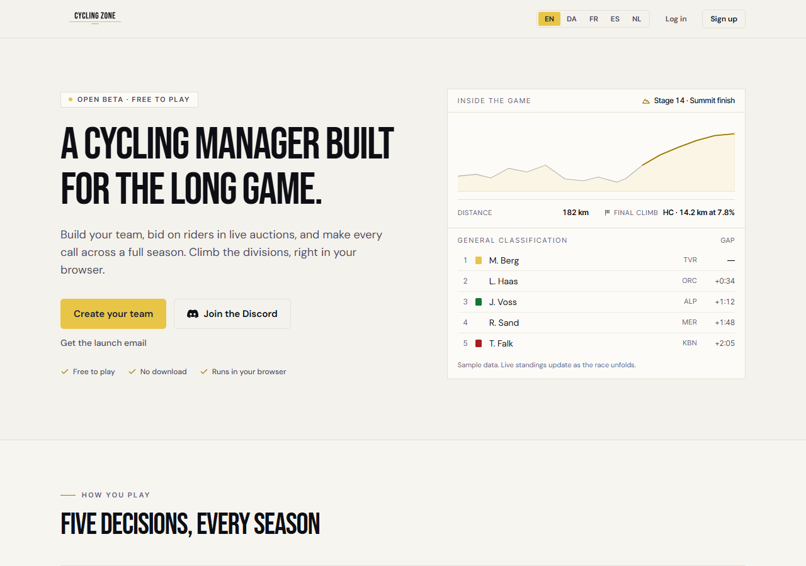
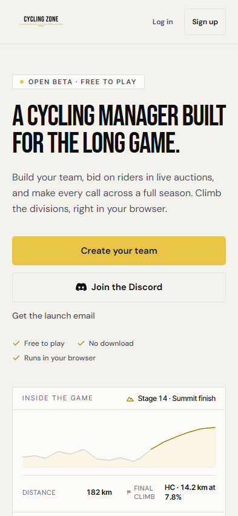

Samme gemte testsession. Svar på sessionsfornyelse holdes tilbage i begge builds.
Marketing vises, mens login afklares.

Mobil · 393 × 852

Stille grå pladsholdere, mens login afklares.
Rigtige browserscreenshots fra lokale builds med testdata. Ikke prod-måling. Dashboardets layout ændres ikke her.